Voisins 2007

Lac de la Sourderie, c'est grand et majestueux, avec une réalisation de Bofill (1986) vraiment intégrée au site...

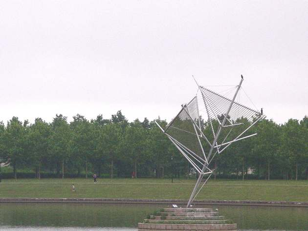
Le lac est très grand (mais peu profond) et avec une sculpture à effrayer les cerfs-volants...

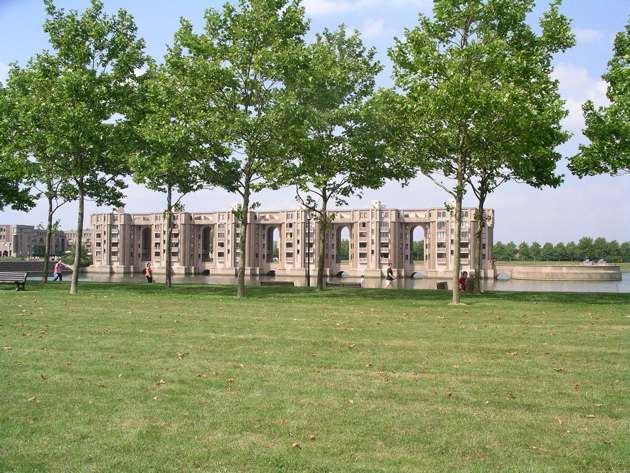
A l'autre bout du lac, une sorte de Chenonceaux mastoc, pas de Bofill celui-là, s'avance dans le lac...

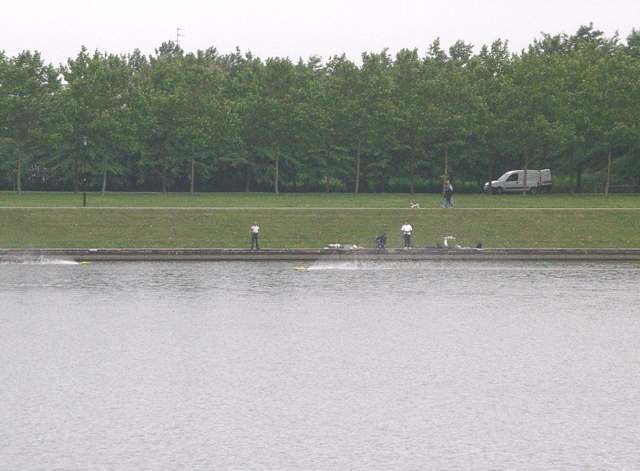
A l'arrivée, il y a déjà des maquettes de bateaux à moteur thermique qui font des rushs de vitesse

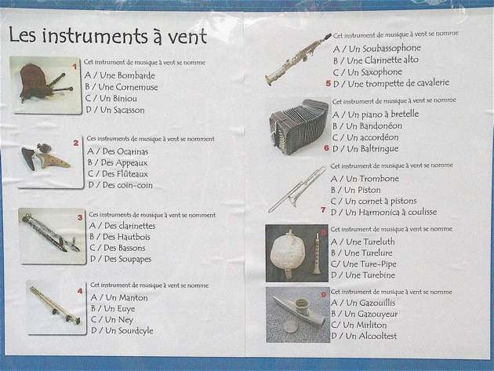
Tout autour du lac, des questionnaires relatifs au vent. Grâce au web, j'ai trouvé que le 4 est un Nay ou Ney iranien, le reste n'est pas trop dur...

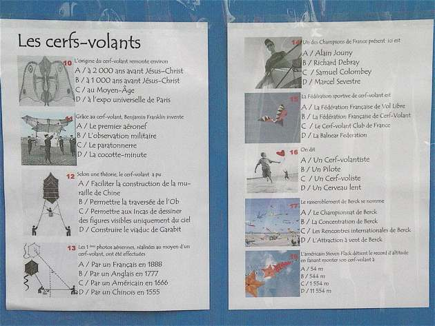
Le questionnaire sur les CVs est intéressant et l'oeuvre d'un connaisseur ! Pour la question 15, j'écarte A et D, aussi invraisemblables l'une que l'autre, mais après, j'hésite !

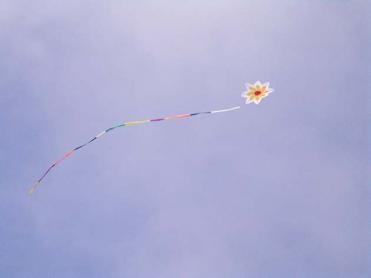
De toute façon, le premier jour, les CVs ne volent pas au bord du lac. Il n'y a d'ailleurs que des pilotables sauf 2 et 1/2 : moi, Emmanuel qui viendra le samedi, et Roland qui marche à la voile et à la vapeur...

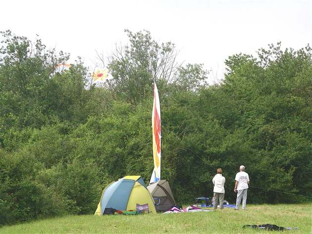
Mais la queue ne fait pas tout, et l'étoile plonge dans les arbres : des églantiers, des aubépines, des prunelliers, un cocktail redoutable...

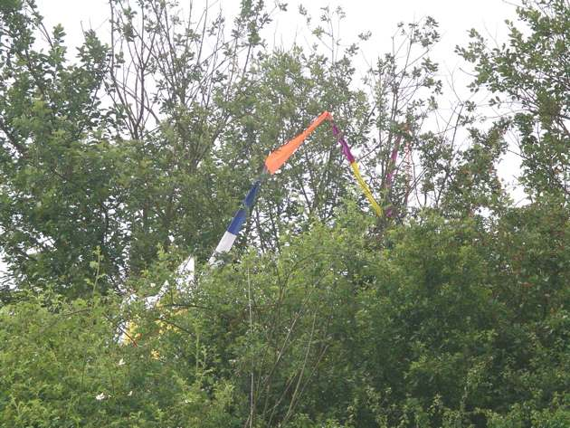
Roland refuse d'abord que je lui soulève, il tire sur le fil, s'engage bien profond et le fil casse, évidemment ! Comme le CV est intact après le sauvetage, il recommence, avec le même résultat ! Bon, j'irai le lui chercher après déjeuner, les sauvetages, j'ai l'habitude !

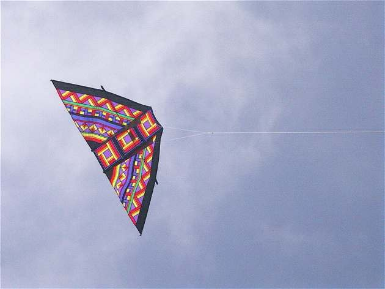
Bon, Roland sort un autre monofil, un double delta qui chutera 2 fois aussi, mais dans le stade de Bicross, c'est plus facile pour le récupérer ! Ensuite, Roland reprendra le pilotable...

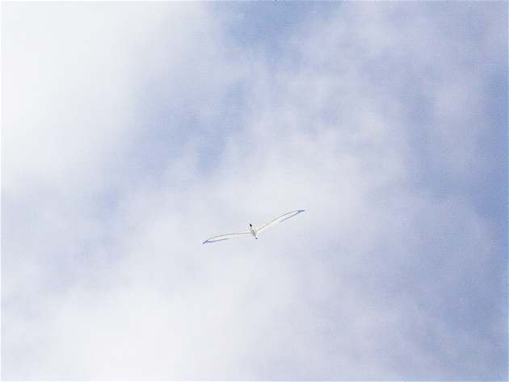
Le vent est faible et un peu capricieux derrière les maisons, mais je peux quand même, après un décollage laborieux, lancer à 240 m mon Albatros 1 qui tiendra en l'air le matin...

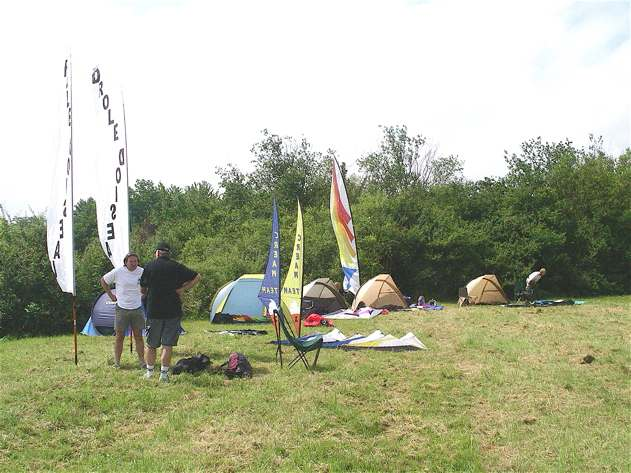
Il y a quand même un peu de monde samedi vers midi, la Cream Team de Chantilly, Dollet le concepteur !

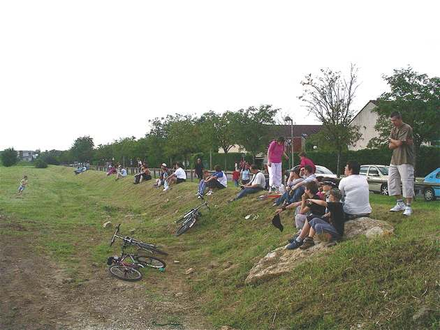
L'après-midi, le vent devient faible, mais le temps est beau. Il y a même un peu de public pour nous voir voler...

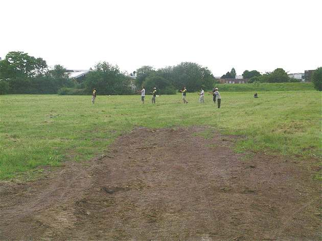
Tous ces jeunes gens s'assemblent sur le terrain, mais comment font-ils pour ne pas s'emmêler ?

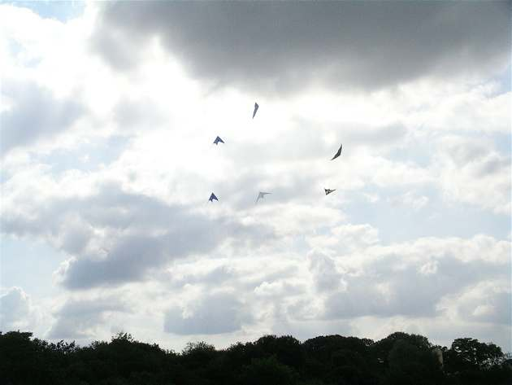
Le truc, c'est qu'ils se suivent à la queue-leu-leu, et ça s'appelle un méga-team...

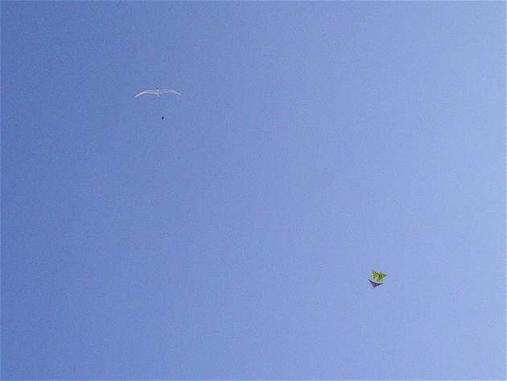
Vent faible, je sors mon Goéland-Spiralier qui volera sans problème ! Emmanuel Duba me rejoint avec un triangle très ajouré, puis son roller couvert de petites langues qui s'agitent...

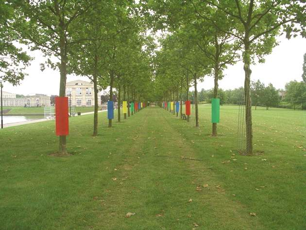
L'après-midi touche à sa fin, on rejoint le bord du lac par un cheminement immanquable et très coloré...

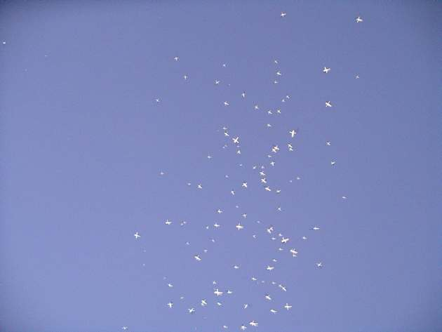
Au soir des bandes énormes de moustiques divers pullulent au bord du lac. Un coup de flash ne leur fait pas peur. Certains sont énormes (et sûrement pas des moustiques, Sylvien saurait sans doute).

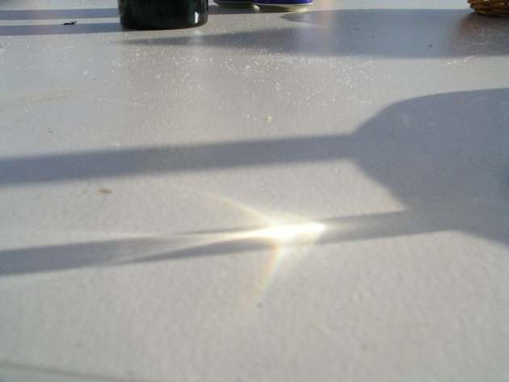
Sur ma table, une hirondelle s'est posée... J'hésite à boire le vin blanc, elle est vraiment belle...

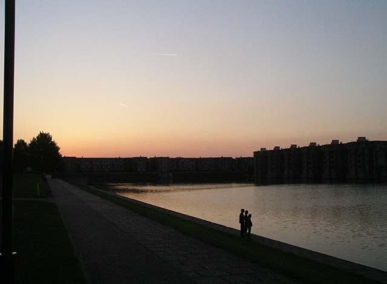
Le soleil se couche derrière les immeubles de Montigny-Le-Bretonneux... J'ai oublié de vous dire, la frontière des frères ennemis Montigny/Voisins coupe le lac en deux...

Le soleil se reflète à l'autre bout dans le miroir concave du télescope Vicinien et Bofillien qui crée son propre coucher impressionniste sur les eaux calmes...

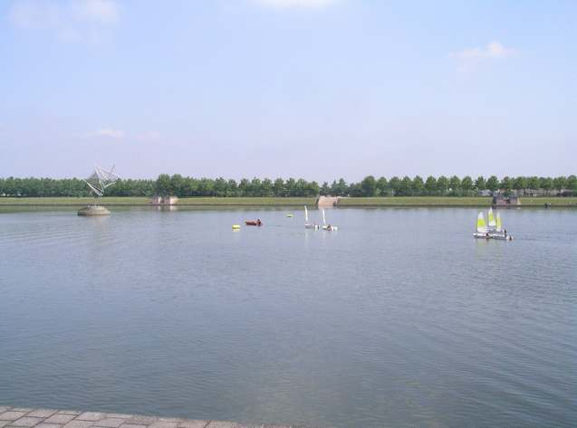
Le dimanche, temps gris, je sors tard... L'initiation Optimist est déjà en croisière sur le lac...

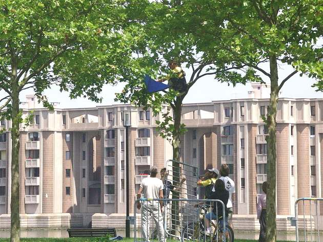
Sur fond de Chenonceaux-béton, la Cream-Team essaye de faire des 360 cause manque de vent et finit dans les arbres. Une barrière sert d'échelle, et le leader grimpe...

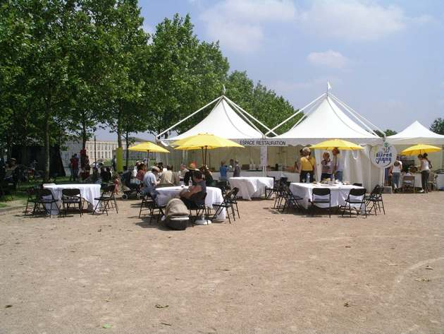
Dimanche, déjeuner. Le restaurant a dressé de magnifiques tables avec nappes en tissu et verres en verre (pas du cristal quand même, mais c'est plus classe que du plastique !)...

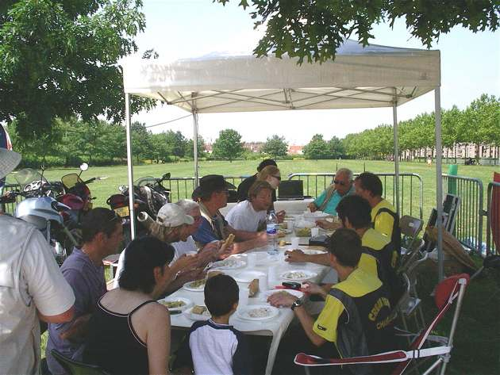
Les cervolistes se montent leur affaire de leur côté sous la tente-sono ! Repas un peu bizarre, il y a tout ce qu'il faut, mais en désordre...

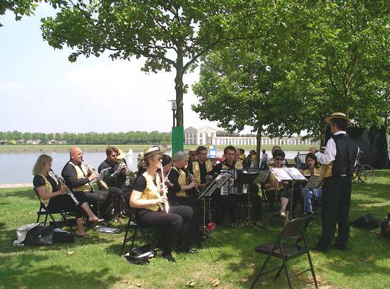
Pendant le déjeuner, nous avons vu arriver l'orchestre (à vent) qui commence à jouer. Bons princes, on arrête la sono... jusqu'à la reprise des vols. Après, il y a concurrence, mais nous, on a des watts en réserve...

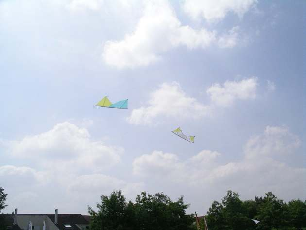
L'après-midi, vent toujours limité. Ca ne gêne pas trop les révos ou assimilés...

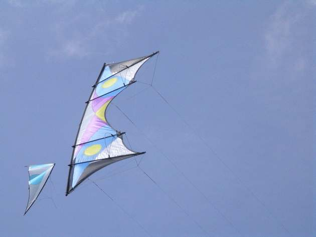
Voilà le faux Révo : il a deux barres de chaque côté, des écarteurs etc. En pratique, il est beaucoup plus plat que le modèle et dérape très facilement (trop ?)...

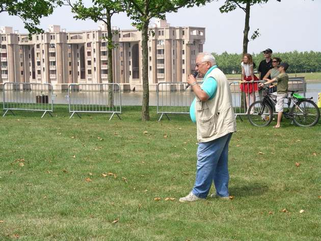
Alain Jouny met de l'ordre dans le show et commente sobrement le total...

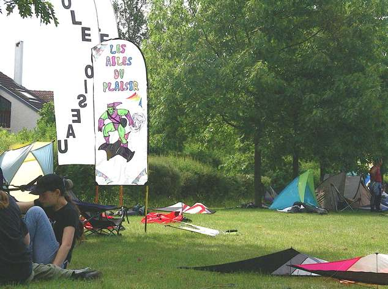
Au bord du lac, le camp est beaucoup plus agréable et ombragé, ce qui permet de surmonter la chaleur qui devient hard...

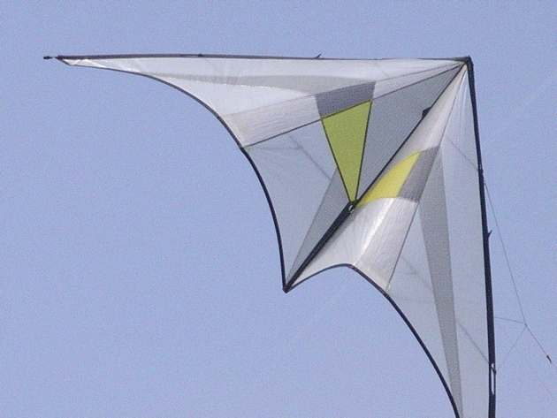
Je vole un peu avec ma raie Manta, mais le terrain, ici, ne se prête pas au monofil : trop d'arbres, surtout pour un vent limité et changeant ! Les pilotables compensent, le champion de France est là, avec son delta sobre et impeccablement tendu...

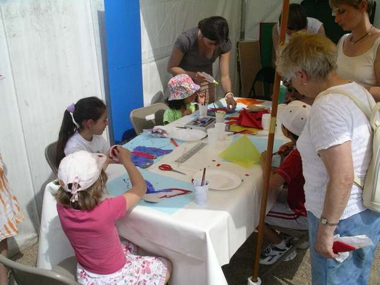
Il y a aussi un atelier pour enfants, mais pas dirigé sur le cerf-volant...

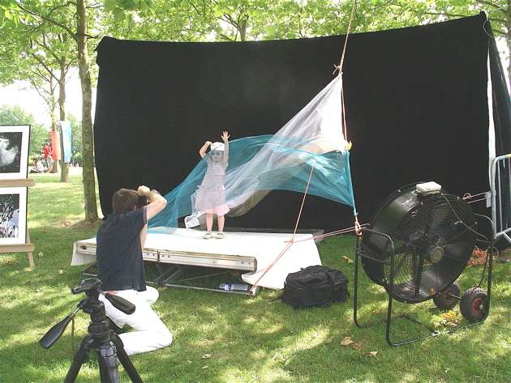
Un photographe a monté un "studio" avec ventilateur et voiles pour des photos féeriques...

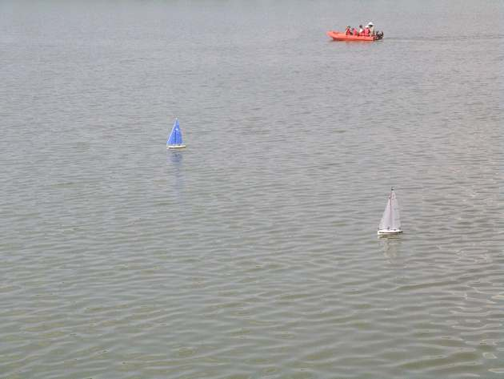
Il y a aussi un volet "maquettes", avec surtout ces voiliers télécommandés, qui régatent sur l'eau...

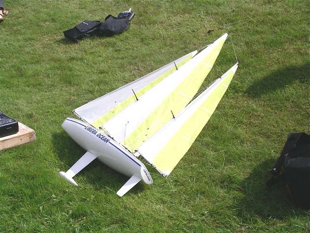
...ou qui posent au sol !

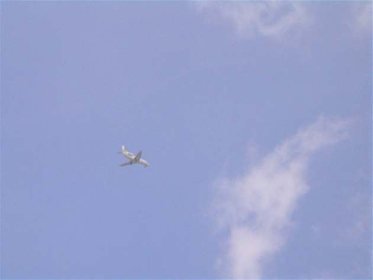
Plus haut, une très grosse maquette. Train sorti, sans doute un avion qui se posera à Villacoublay, pas bien loin...

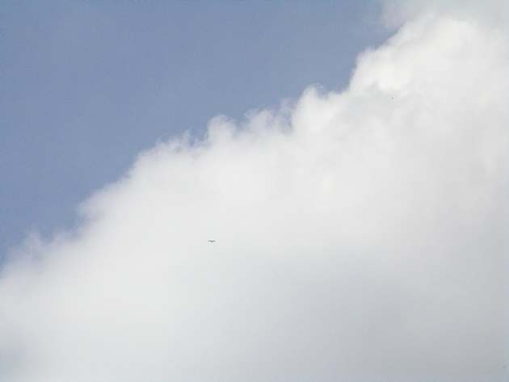
Et un de mes cerfs-volants, très haut.... Ah non, c'est un vrai oiseau, cette fois...

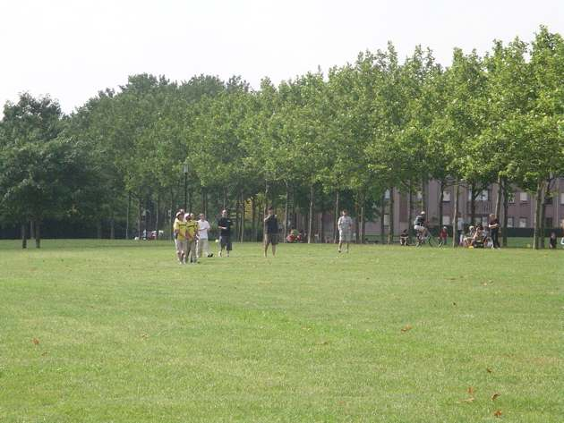
Comme hier, des jeunes gens, mais bien alignés cette fois, d'autant que le terrain n'est pas large, il faut se serrer...

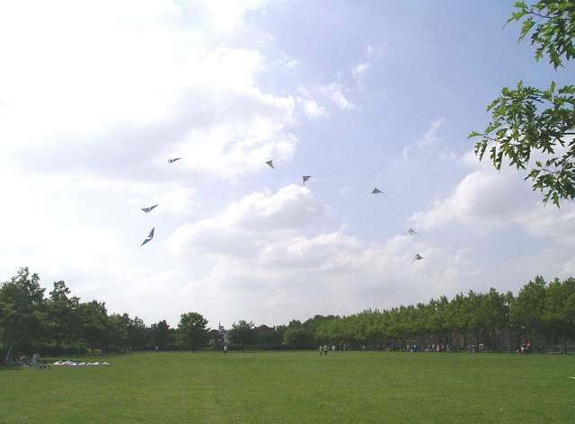
Hé oui, c'est un mégateam : c'est mauvais signe, en général, ça annonce la fin des hostilités !
Conclusion : un peu trahis par le vent faible. Le cadre est beau, mais le bord du lac est peu praticable pour les monofils. Heureusement, j'étais quasiment seul ! Une rencontre surtout de pilotables, donc, et décontractée.